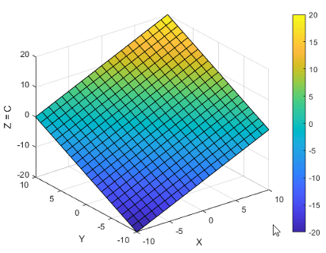
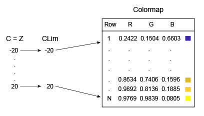
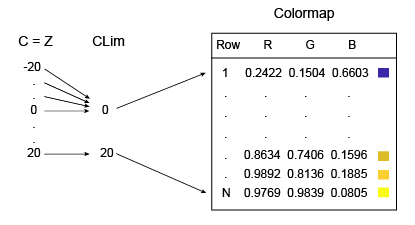
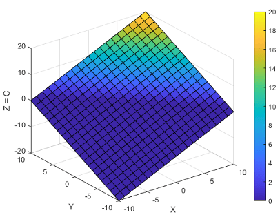
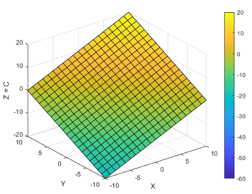

Control Colormap Limits
For many types of visualizations you create, MATLAB® maps the full range of your data to the colormap by default. The smallest value in your data maps to the first row in the colormap, and the largest value maps to the last row in the colormap. All intermediate values map linearly to the intermediate rows of the colormap.
This default mapping is useful in most cases, but you can perform the mapping over any range you choose, even if the range you choose is different than the range of your data. Choosing a different mapping range allows you to:
See where your data is at or beyond the limits of that range.
See where your data lies within that range.
Consider the surface Z = X + Y, where –10 ≤ x ≤ 10 and –10 ≤ y ≤ 10.
[X,Y] = meshgrid(-10:10); Z = X + Y; s = surf(X,Y,Z); xlabel('X'); ylabel('Y'); zlabel('Z = C'); colorbar

How Surface Plot Data Relates to a Colormap describes the
properties that control the color in this presentation. Essentially,
the CData property of the Surface object
contains an array C that associates each grid point
on the surface to a color in the colormap. By default, C is
equal to Z, where Z is the array
containing the values of z = f(x,y)
at the grid points. Thus, the colors vary with changes in Z.
The mapping range is controlled by the CLim property
of the Axes object. This property contains a two-element
vector of the form [cmin cmax]. The default value
of cmin is equal to the smallest value of C,
and the default value of cmax is the largest value
of C. In this case, CLim is [-20
20] because the range of C reflects the
range of Z.

Changing CLim to [0 20] clips
all the values at or below 0 to the first color
in the colormap.

The clim function changes the CLim
property to [0 20]. Notice that the lower half of the
surface maps to the first color in the colormap (dark blue). This clipping
occurs because C (which is equal to Z)
is less than or equal to zero at those points.
clim([0 20])

Before R2022a: Change the colormap limits using
caxis([0 20]).
You can also widen the mapping range to see where your data lies within that range. For
example, changing the range to [-60 20] results in a
surface that only uses half of the colors. The lower half of the colormap
corresponds to values that are outside the range of C, so
those colors are not represented on the surface.
clim([-60 20])

Before R2022a: Change the colormap limits using
caxis([-60 20]).
Note
You can set the CLim property for surface
plots, patches, images, or any graphics object that uses a colormap.
However, this property only affects graphics objects that have the CDataMapping property
set to 'scaled'. If the CDataMapping property
is set to 'direct', then all values of C index
directly into the colormap without any scaling. Any values of C that
are less than 1 are clipped to the first color in the colormap. Any
values of C that are greater than the length of
the colormap are clipped to the last color in the colormap.
See Also
clim | colormap | colorbar | surf